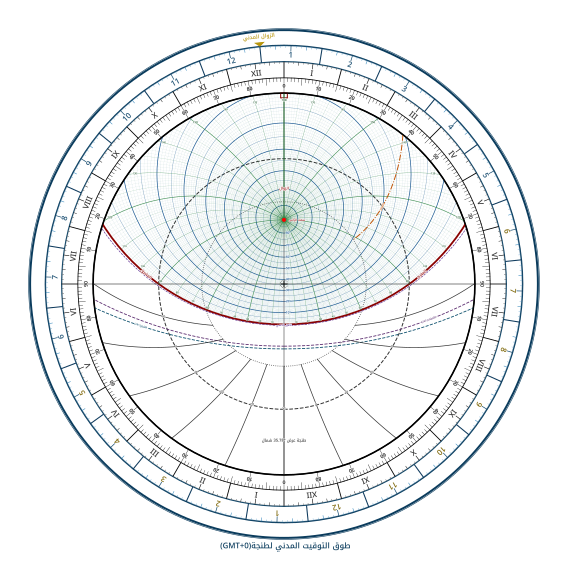
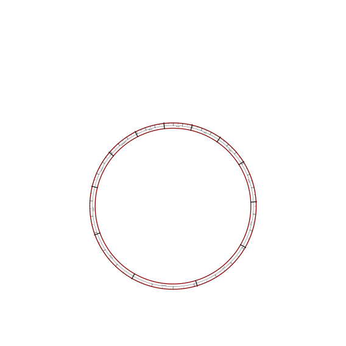
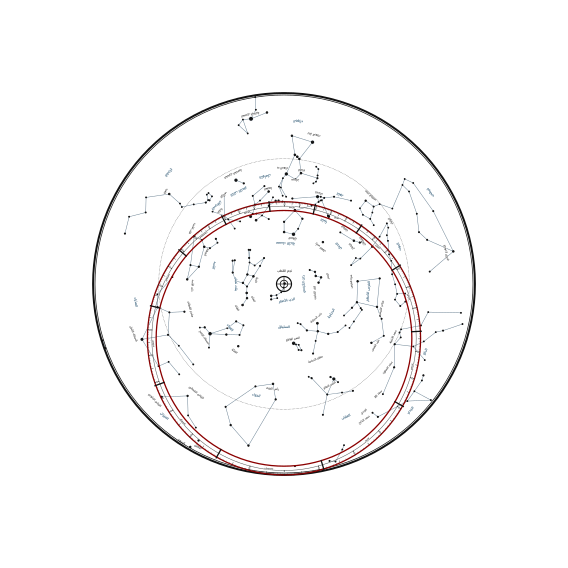
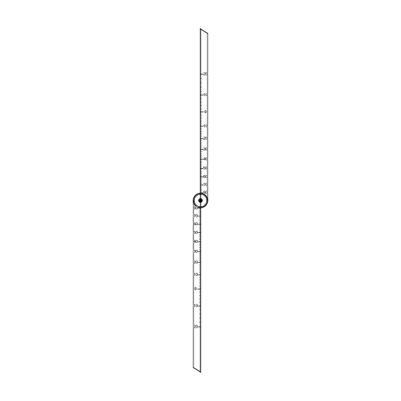
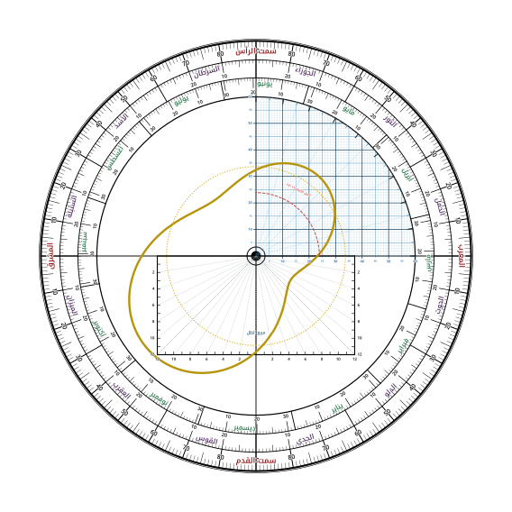
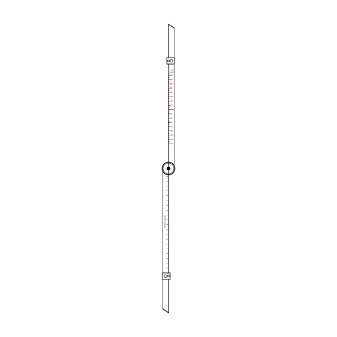

☰
الإعدادات
🌟 الكل
✨ النجوم
📐 المقنطرات
🕌 الصلاة
☀️
فاتح
🏺
عتيق
🌙
داكن
🔭
المرصد
☀️
الوجه
🧭
الشبكة
-1س
-10د
12:00
+10د
+1س
⏱ الآن
|
-1ي
📅
21 مارس
+1ي
🔄
تدوير
+
−
⟲
100%
🔭
مرصد الأسطرلاب المباشر
نهار
تحت المسدد / العضادة:
الشمس ☉
منزل القمر (الأنواء):
--
الارتفاع الفلكي (المقنطرة):
+0.0°
سمت الرأس (السمت):
0.0°
الوقت الشمسي:
12:00
مطلع الفلك (LST نجومي):
--:--
⭐ أقرب نجم: يد الجوزاء (Betelgeuse)
● مباشر
☀️ شمس:
12:00
⏰ مدني:
12:45
📐 ارتفاع:
+42.5°
الأسطرلاب الفلكي
طنجة (عرض 35.78° شمالاً | توقيت GMT+0)
✕
☀️ وجه الأسطرلاب
🌙 ظهر الأسطرلاب
نمط المظهر والمعدن:
☀️ فاتح
🏺 عتيق
🌙 داكن
الرصد الفلكي المباشر
● مباشر
نهار
التاريخ الشمسي:
--
برج وموضع الشمس:
--
الوقت الشمسي (الأسطرلاب):
--
التوقيت المدني (GMT+0):
--
ارتفاع الشمس (المقنطرة):
--
سمت الشمس (السمت):
--
المسدد بالعضادة:
الشمس المباشرة ☉
دوران الشبكة (النجوم والأبراج):
0.0°
دوران المسطرة (العضادة):
0.0°
📅 تاريخ اليوم (Date):
21 مارس
اليوم
🌸 21 مارس (ربيع)
☀️ 21 يونيو (صيف)
🍂 23 سبتمبر (خريف)
❄️ 21 ديسمبر (شتاء)
أو مرّر الأيام (1 - 365):
اليوم 80
الوقت الشمسي (الساعات):
12:00
تكبير الأسطرلاب والتفاصيل:
100%
مواقيت الصلاة الفلكية (Prayer Times):
الفجر (١٩°-)
الشروق (٠°)
الظهر (الزوال)
العصر (الظل+١)
المغرب (٠°)
العشاء (١٧°-)
الوقت الحقيقي (الآن)
حفظ رصد (طباعة)
💡 اسحب بإصبعك للتدوير، أو اضغط زر 🔍 للتحريك، أو استخدم إصبعين للتكبير والتحريك في أي وقت.
قياس الارتفاع على حافة الزوايا
الظهر
الارتفاع المقاس (0° إلى 90°):
0.0°
زاوية العضادة (0° إلى 360°):
0.0°
الربع الفلكي:
ربع المغرب
معادلة الوقت (Equation of Time)
قيمة المعادلة:
+00:00 دقيقة
قراءة تدريج العضادة:
+0.0 دقيقة
حالة الشمس:
تطابق الوقت المتوسط
مربع الظل وربع المجيب الستيني
الظل المبسوط (12 أصبع):
0.0 أصبع
الظل المنكوس (12 أصبع):
0.0 أصبع
جيب الارتفاع (ستيني 60):
0.0 / 60
جيب التمام (ستيني 60):
60.0 / 60
دوران العضادة الخلفية (Alidade):
0.0°
📅 تاريخ اليوم والبرج (Date):
21 مارس
اليوم
🌸 21 مارس (ربيع)
☀️ 21 يونيو (صيف)
🍂 23 سبتمبر (خريف)
❄️ 21 ديسمبر (شتاء)
أو مرّر الأيام (1 - 365):
اليوم 80
ارتفاع الزوال اليوم
نقطة السمت (90°)
خط الأفق (0°)
ارتفاع صلاة العصر